O-NEST | Lighting
O-NEST is a three-piece lighting series designed for the diverse needs of outdoor life. From portable illumination to ambient lighting and playful interaction, each light brings a different function to the camping experience.
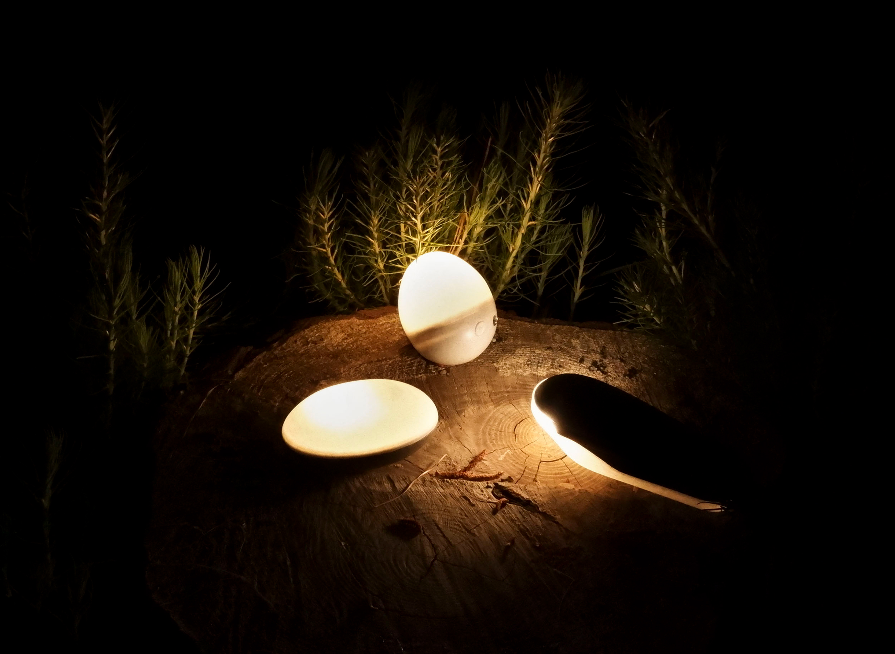
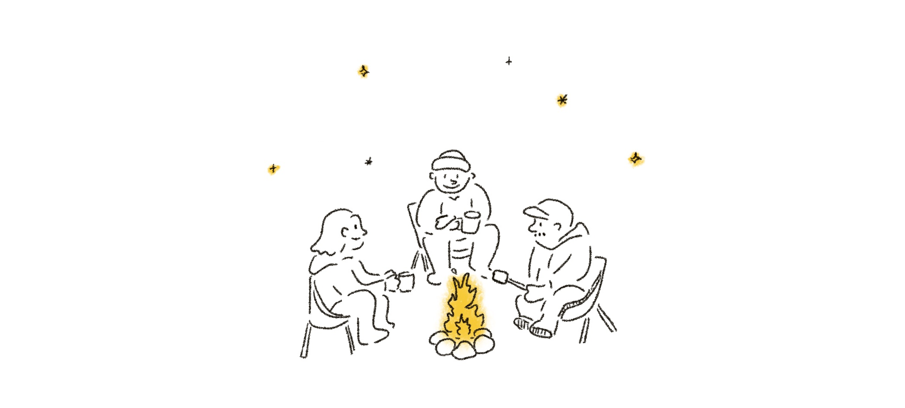
Camping is filled with moments to enjoy together, from children running around outdoors and nighttime walks to gathering around a campfire, sharing stories late into the evening. Each moment brings a different way to experience the outdoors, and each calls for a different kind of light.
O-NEST is a three-piece lighting series designed around these moments. From portable lighting for nighttime adventures to ambient light for shared evenings and playful lighting that invites interaction, each light serves a distinct purpose, helping everyone enjoy the outdoors in their own way.
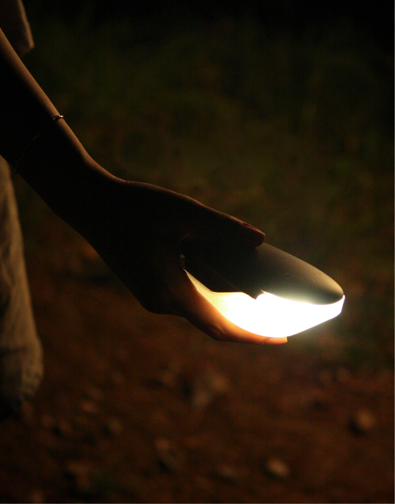
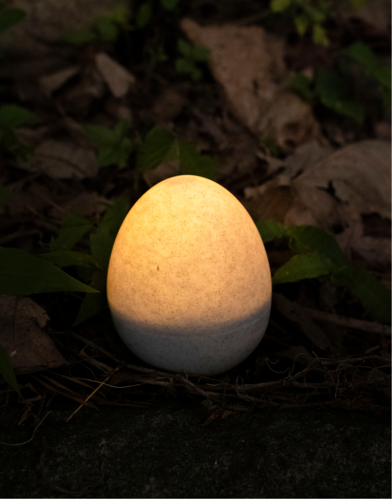
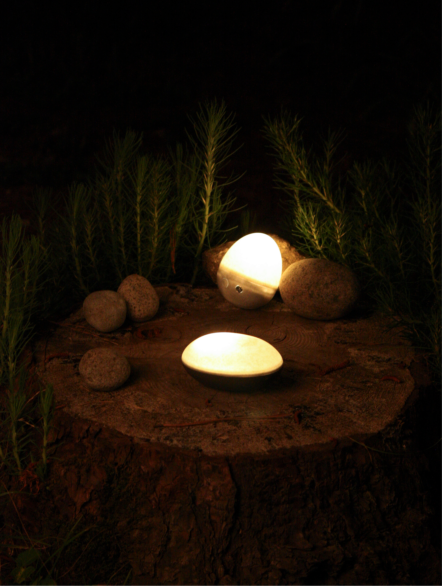
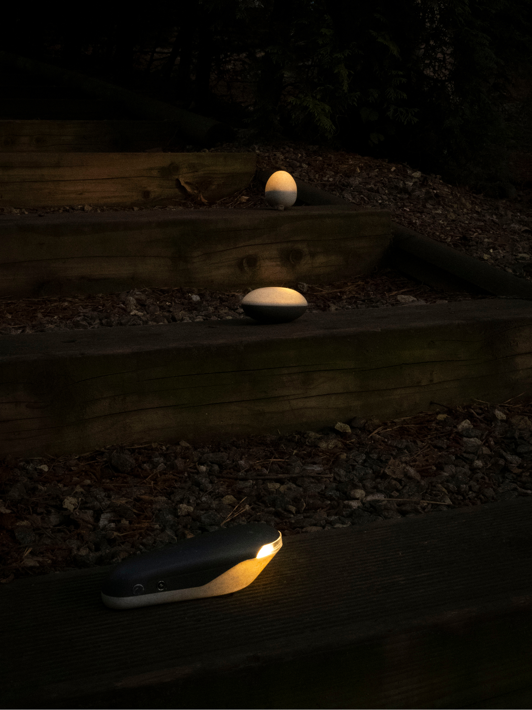
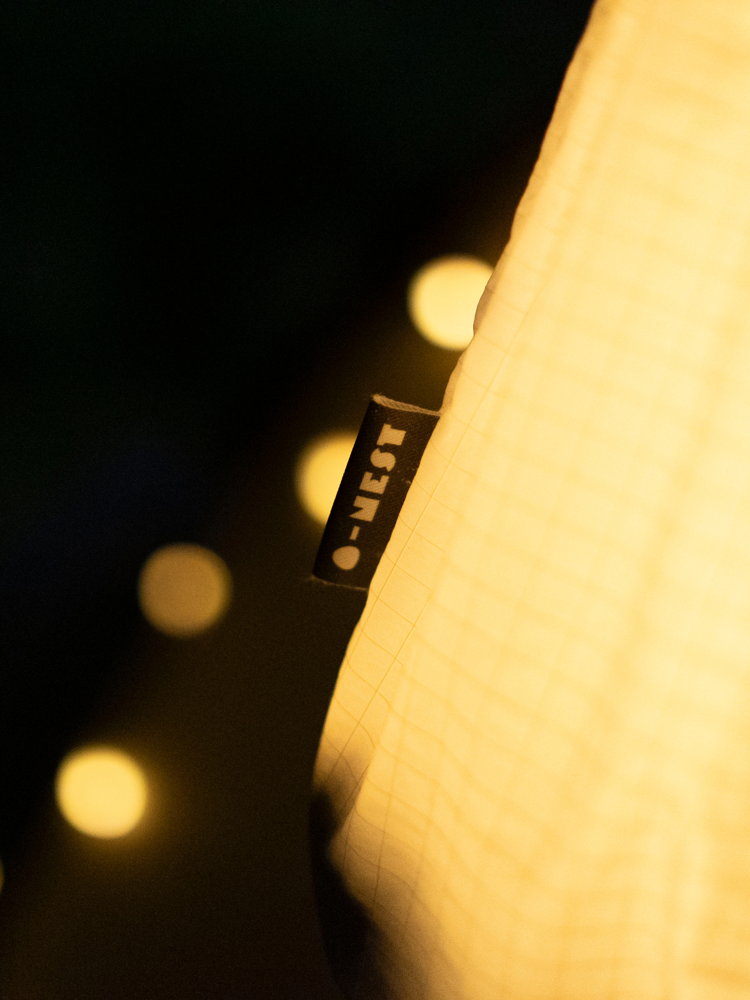
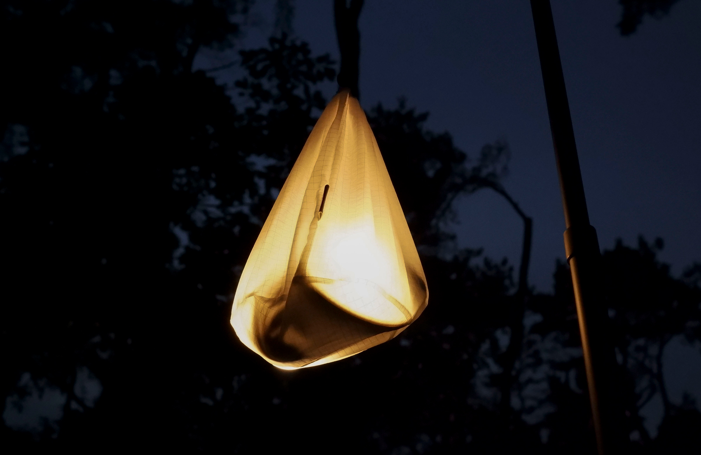
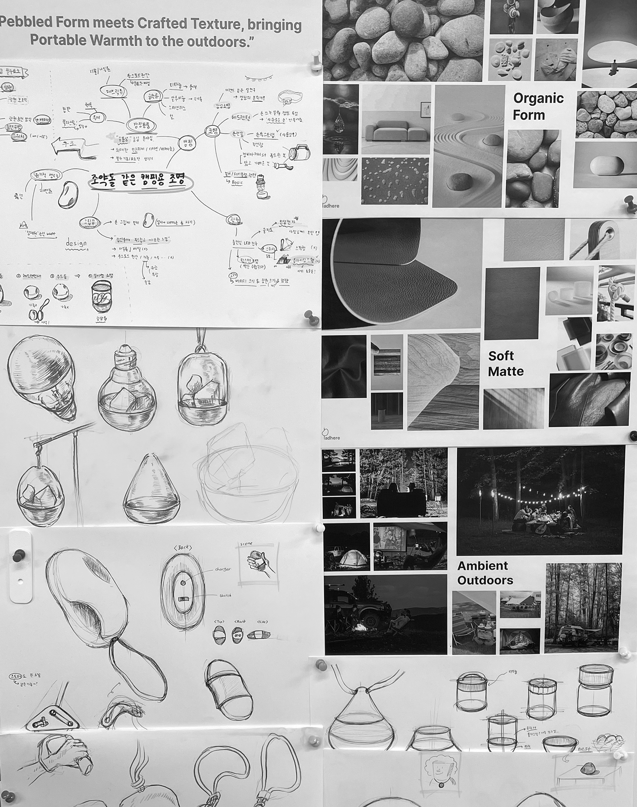
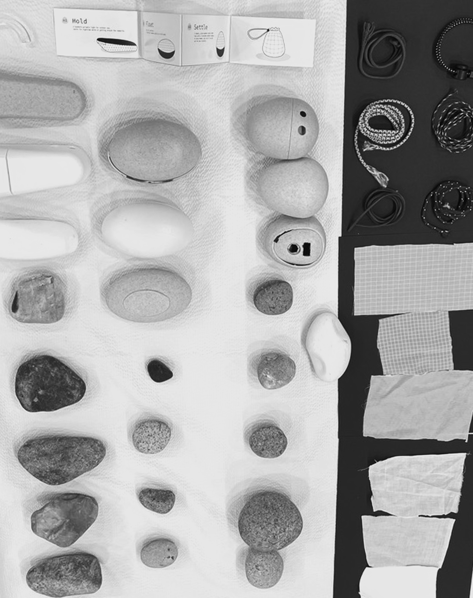
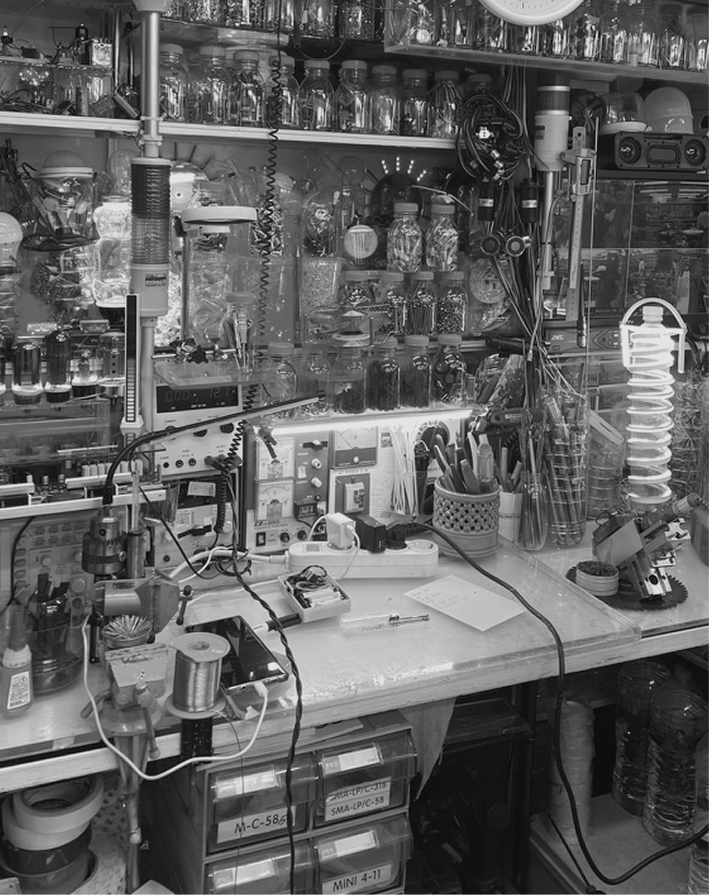
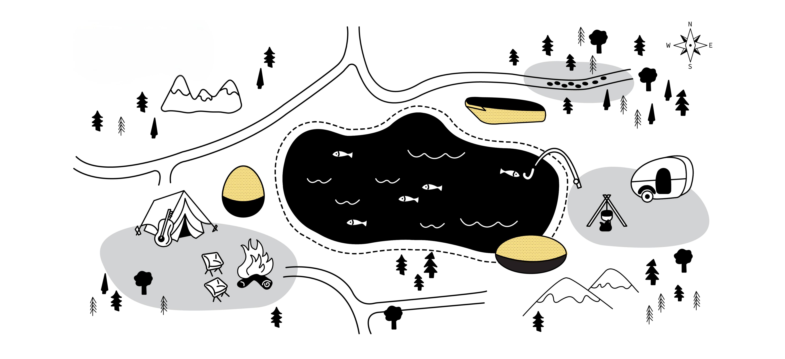
Designed for different moments outdoors,
the three lights support movement, relaxation, and play throughout the campsite.
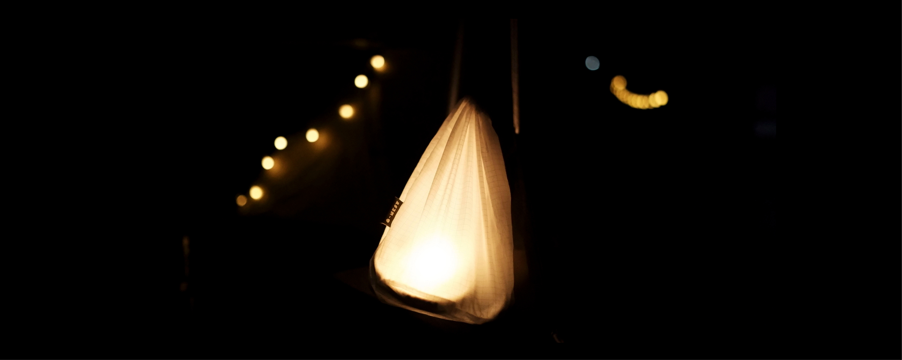